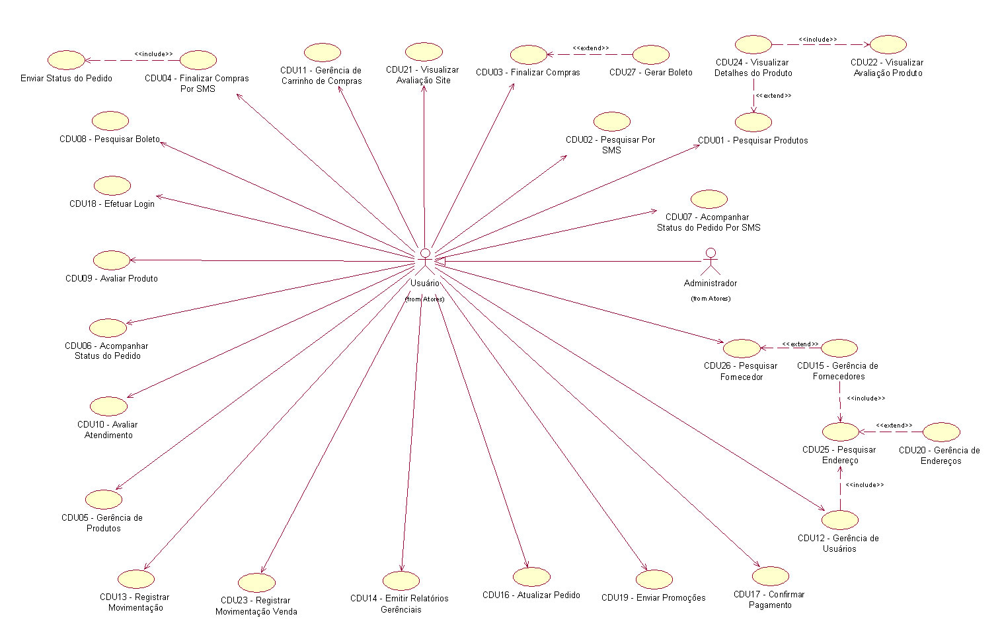

Id: CDU01
Nome: Pesquisar Produtos
Requisitos Relacionados: RF01.
Ator Inicial: Usuário Móvel.
Pré-Condição: Sem Pré-Condição.
Fluxo Principal:
1 - Usuário insere um parâmetro para busca
2 - Sistema procura por produtos com o Titulo ou artisa relacionado com o parâmetro da busca.
3 - Usuário visualiza itens da pesquisa. E1
Fluxo de Exceção:
E1 - Caso não seja encontrado nenhum produto, sistema retorna mensagem que não foi encontrado nenhum produto.
Prioridade:
Normal.
Id: CDU02
Nome: Pesquisar por SMS
Requisitos Relacionados: RF01.
Ator Inicial: Usuário Móvel.
Pré-Condição: Sem Pré-Condição.
Fluxo Principal:
1 - Usuário envia SMS solicitando BUSCAR com o Titulo do produto desejado.
2 - Sistema lê mensagem e direciona para opção desejada pelo Usuário.
3 - Sistema pesquisa produtos conforme Titulo informado pelo Usuário. E1
4 - Sistema gera arquivo xml com dados dos produtos e grava na pasta receive para a operadora enviar ao usuario.
Fluxo de Exceção:
E1 - Caso não seja encontrado nenhum produto, sistema retorna mensagem informado a não existencia de produtos.
Prioridade:
Normal
.
ID: CDU03
Nome:Finalizar Compras
Requisito Relacionado: RF02
Ator Inicial: Cliente
Pré-Condição: possuir produtos no carrinho.
Fluxo Principal:
01 – Cliente seleciona finalizar compra.
02 – Cliente não loggado => E1.
03 – Cliente seleciona endereco
04 – Sistema inseri os itens do carrinho, dados do usuário e o endereço escolhido em uma pré venda.
05 – Cliente escolhe a forma de pagamento.
06 – Forma de pagamento por cartão => FA1
07 – O sistema adiciona a forma de pagamento a pré venda
08 – Cliente confirma os dados.
09 – Atualiza estoque. Sem estoque disponível E2.
10 – O sistema finaliza o pedido.
11 – Envia email.
Fluxos Alternativos:
FA 1:
01 – Cliente inseri os dados do cartão.
02 – O sistema adiciona os dados do cartão a pré venda.
03 – Fim.
Fluxos de Exceções:
E1 – Redirecionado para pagina de acesso.
E2 – Pagina de erro com o aviso de produto com falta em estoque.
Id: CDU04
Nome: Finalizar Compras por SMS.
Requisitos Relacionados: RF02.
Ator Inicial: Usuário Móvel.
Pré-Condição: Interesse do Usuário em comprar via SMS e cadastro no site.
Fluxo Principal:
1 - Usuário pesquisa e escolhe produto.
2 - Usuário envia SMS com Cod. Produto.
3 - Sistema lê mensagem e direciona para opção desejada pelo Usuário.
4 - Sistema verifica cadastro de Usuário. E1
5 - Sistema busca endereço padrão para entrega. E2
6 - Sistema verifica o produto selecionado pelo Usuário. E3
7 - Sistema verifica quantidade disponivel em estoque para o Produto escolhido pelo Usuário. E4
8 - Sistema grava Pedido para Operadora Celular.
9 - Sistema atualiza quantidade disponivel.
10 - Sistema gera arquivo xml com dados do pedido para o usuario e grava na pasta receive para a operadora enviar ao usuario.
Fluxo de Exceção:
E1 - Caso Usuario não for cadastrado sistema retornará mensagem ao mesmo.
E2 - Caso endereço não for encontrado sistema retornará mensagem ao Usuário.
E3 - Caso Produto não for cadastrado sistema retornará mensagem ao mesmo.
E4 - Caso não tenha quantidade disponivel em estoque do produto sistema retornará mensagem ao mesmo.
Prioridade:
Normal.
ID:CDU05
Nome: Gerência de Produtos.
Requisitos Relacionados: RF03
Pré Condição - Estar Logado como Administrador do site.
Ator Inicial - Administrador
Alterar Produtos
Fluxo Principal:
1 - Usuário seleciona alterar produto.
2 - Sistema exibe os dados atuais do produto para edição.
3 - Usuario altera os dados do produto.
Excluir Produtos
Fluxo Principal:
1 - Usuário seleciona excluir produto.
2 - Sistema exibe os dados atuais do produto.
3 - Usuario confirma exclusão do produto.
Inserir Produtos
Fluxo Principal:
1 - Usuário seleciona inserir produto.
2 - Sistema exibe campos a serem inseridos.
3 - Usuario insere os dados do produto.
Visualizar Produto
Fluxo Principal:
1 - Usuário seleciona visualizar detalhes produto.
2 - Sistema exibe os dados do produto.
Id: CDU06
Nome: Acompanhar Status do Pedido (WAP, Desktop)
Requisitos Relacionados: RF04
Ator Inicial: Cliente
Pré-Condição: Loggin no site.
Fluxo Principal:
1 – Cliente solicita pedidos. Cliente não loggado => E1
2 – Cliente escolhe um tipo de pesquisa. Pesquisa por status FA1. Pesquisa por data FA2.
3 – Cliente digita o código do pedido.
4 – Sistema retorna o pedido. Pedido não encontrado => E2
5 – Cliente solicita visualizar os detalhes do pedido.
6 – Sistema retorna detalhes do pedido.
Fluxo Alternativo:
FA1 - Cliente escolhe um tipo de status.
FA1.1 - Sistema retorna lista de pedidos com o status selecionado pelo cliente. Pedido não encontrado => E2.
FA2 - Cliente informa data de inicio e fim.
FA2.1 - Sistema retorna lista de pedidos entre a data selecionada pelo cliente. Pedido não encontrado => E2.
Fluxo de Exceção:
E1 – Sistema redireciona o cliente para pagina de acesso.
E2 – Sistema apresenta mensagem de pedido não encontrado.
ID: CDU07
Nome:Acompanhar Status do Pedido por SMS
Requisito Relacionado: RF04
Ator Inicial: Cliente
Pré-Condição: Cliente ter comprado um produto
Fluxo Principal:
1 - Cliente envia uma SMS com a frase “Acompanhar + NºPedido”
2 - Sistema lê mensagem e direciona para opção desejada pelo Usuário.
3 - Sistema verifica cadastro de Usuário. E1
4 - Sistema verifica o Pedido selecionado pelo Usuário.
5 - Sistema gera arquivo xml com dados do pedido para o usuario e grava na pasta receive para a operadora enviar ao usuario.
Fluxo de Exceção:
E1 - Caso Usuario não for cadastrado sistema retornará mensagem ao mesmo.
ID: CDU8
Nome: Pesquisar Boleto
Requisitos Relacionados: RF05
Pré Condição :Usuário deve estar logado
Ator Inicial : Usuário
Fluxo Principal:
1 - Usuário seleciona impimir boleto.
2 - Sistema busca todos os boletos em aberto do usuário. E1
3 - Usuário seleciona um boleto da lista
4 - Sistema exibe boleto na tela.
Fluxo de Exceção:
E1- Boleto encontrado
ID: CDU09
Nome: Avaliar Produto
Requisitos Relacionados RF14
Pré Condição : Usuário deve estar logado
Ator Inicial : Usuário
Fluxo Principal:
1 - Usuário seleciona avaliar produto.
2 - Sistema verifica se o usuário já avaliou o produto. E1
3 - Usuário insere avaliação.
Fluxo de Exceção:
E1 - Usuário já opniou por este produto
Id: CDU10
Nome: Avaliar Atendimento.
Requisitos Relacionados: RF06.
Ator Inicial: Usuário.
Pré-Condição: Estar logado no sistema e desejar atribuir alguma informação que considere importante ao site.
Fluxo Principal:
1 - Usuário solicita avaliar atendimento.
2 - Sistema apresenta tela de avaliação.
3 - Usuário insere avaliação.
4 - Sistema registra avaliação do usuário.
E1
5 - Sistema retorna mensagem.
Fluxo de Exceção:
E1 - Caso haja alguma falha o sistema deverá retornar uma mensagem ao usuário.
Prioridade:
Normal.
Id: CDU11
Nome: Gerência de Carrinho de Compras
Requisitos Relacionados: RF07
Ator Inicial: Cliente
Pré-Condição: Produtos em estoque.
Fluxo Principal:
1 - Cliente solicita visualizar carrinho.
2 - Sistema apresenta a pagina do carrinho com os itens. Sem item => E1.
FA1, FA2, FA3.
Fluxo Alternativo:
FA1 - Cliente solicita inserir produto no carrinho.
FA1.1 - Sistema calcula valor Total e registra Produto no carrinho. Produto já registrado => E2.
FA1.2 - Sistema apresenta o carrinho.
FA2 - Cliente informa quantidade nova. Quantidade acima de 4 => E3
FA2.1 - Sistema calcula valor total e atualiza carrinho.
FA2.2 - Sistema apresenta o carrinho.
FA3 - Cliente seleciona produto para excluír.
FA3.1 - Sistema exclui o produto selecionado do carrinho. Produto não encontrado => E4.
FA3.2 - Sistema calcula valor total e atualiza carrinho.
FA3.3 - Sistema apresenta o carrinho.
Fluxo de Exceção:
E1 – Caso não exista produtos no carrinho sistema retornará mensagem da inexistência de produtos.
E2 – Sistema não registra o produto novamente e retorna o carrinho sem alterações.
E3 – Sistema alerta para quantidade inválida.
E4 – Sistema alerta para produto não encontrado.
id: CDU12
Nome: Gerência de Usuário
Requisitos Relacionados: RF08
Ator Inicial: Usuário
Pré-Condição: Manter dados sobre usuários
Fluxo Principal:
1 - Usuário realiza Efetuar Login.
FA1
2 - Usuário seleciona opção Gerência de Usuários.
3 - Sistema apresenta tela de Visualização de Usuários.
4 - Usuário solicita visualizar dados cadastrados.
5 - Sistema apresenta dados.
FA2, FA3.
Fluxo Alternativo:
FA1 - Usuário seleciona Efetuar Cadastro.
FA1.1 - Sistema apresenta tela de verificação de Login.
FA1.2 - Usuário informa dados para login.
FA1.3 - Sistema verifica disponibilidade.
E1
FA1.4 - Sistema apresenta Tela de Cadastro.
FA1.5 - Usuário informa dados pessoais, senha e interesse para rebecer promoções via email.
FA1.9 - Sistema valida e registra novo Usuário
E2
FA2 - Usuário seleciona atualiza dados pessoais
.
FA2.1 - Usuário realiza alterações necessárias.
FA2.2 - Sistema valida e registra alterações.
E2
FA3 - Usuário seleciona excluir cadastro.
FA3.1 - Usuário confirma exclusão.
E3
FA3.2 - Sistema exclui dados do Usuário.
Fluxo de Exceção:
E1 - Caso houver algum usuário já cadastrado com o login informado o sistema solicitará a escolha de novo login.
E2 - Caso exista algum campo inválido ou não preenchido o sistema retornará mensagem indicando os campos inválidos.
E3 - Caso o Usuário desista o sistema apresentará tela principal.
Prioridade:
Normal.
ID: CDU13
Nome: RegistrarSaidaVenda.
Requisitos Relacionados RF09
Pré Condição -
1 - Usuário precisa estar logado no sistema
Ator Inicial - Usuario
Fluxo Principal:
1 - Usuário Seleciona Registrar movimento de Produtos
2 - Usuário informa o código do produto, tipo de movimento e a quantidade. - FA1
3 - Usuário seleciona Registrar Movimento.
FA1 - Caso o produto não esteja cadastrado, o usuário deverá inserir o produto primeiro.
ID: CDU14
Nome: Emitir Relatorios
Requisitos Relacionados: RF10
Pré Condição - Estar Logado como Administrador.
Ator Inicial - Administrador
Fluxo Principal:
1 - Usuário seleciona gerar relatorios
2 - Sistema exibe os tipos de relatórios disponíveis FA1
3 - Usuário seleciona o tipo de relatório desejado
4 - Sistema gera o relatório.
FA1 - Usuário poderá selecionar relatório de vendas,
Id: CDU15
Nome: Gerência de Forrnecedores
Requisitos Relacionados: RF11
Ator Inicial: Funcionário
Pré-Condição: Manter dados sobre Fornecedores.
Fluxo Principal:
1 - Funcionário realiza Efetuar Login.
FA1
2 - Fornecedor seleciona opção Gerência de Fornecedores.
3 - Sistema apresenta tela de Visualização de Fornecedores.
4 - Funcionário solicita visualizar dados cadastrados.
5 - Funcionário informa código do fornecedor.
E1
6 - Sistema apresenta dados.
FA2, FA3.
Fluxo Alternativo:
FA1 - Funcionário seleciona Efetuar Cadastro.
FA1.1 - Sistema apresenta Tela de Cadastro.
FA1.2 - Funcionário informa dados do Fornecedor.
E3
FA1.3 - Sistema valida e registra novo Fornecedor
E2
FA2 - Funcionário seleciona atualiza dados pessoais.
FA2.1 - Funcionário realiza alterações necessárias.
E3
FA2.2 - Sistema valida e registra alterações
E2
FA3 - Funcionário seleciona excluir cadastro.
E3
FA3.1 - Funcionário confirma exclusão.
FA3.2 - Sistema exclui dados do Fornecedor.
FA3.3 - Sistema apresenta mensagem de exclusão de cadastro.
Fluxo de Exceção:
E1 - Caso não for encontrado o fornecedor sistema retornará mensagem.
E2 - Caso exista algum campo inválido ou não preenchido o sistema retornará mensagem indicando os campos inválidos.
E3 - Caso o Funcionário desista o sistema retornará mensagem de cancelamento e apresentará tela principal.
Prioridade:
Normal.
Id: CDU16
Nome: Alterar Pedido
Requisitos Relacionados: RF12
Ator Inicial: Usuário
Pré-Condição: Compras no site.
Fluxo Principal:
1 – Usuário informa qual tipo de pesquisa deseja. Por Status => FA1. Por Data => FA2
2 – Usuário informa código do pedido.
3 – Sistema retorna o pedido. Pedido não encontrado => E1
5 – Usuário solicita visualizar os detalhes do pedido.
6 – Sistema retorna detalhes do pedido.
Fluxo Alternativo:
FA1 - Usuário escolhe um tipo de status.
FA1.1 - Sistema retorna lista de pedidos com o status selecionado pelo Usuário . Pedido não encontrado =>
E1.
FA2 - Usuário informa data de inicio e fim.
FA2.1 - Sistema retorna lista de pedidos entre a data selecionada pelo Usuário . Pedido não encontrado =>
E1.
Fluxo de Exceção:
E1 – Sistema apresenta mensagem de pedido não encontrado.
Id:CDU17
Nome: Confirmar Pagamento
Requisitos Relacionados: RF13
Ator Inicial: Usuário
Pré-Condição: Compras no site.
Fluxo Principal:
1 – Usuário informa qual tipo de confirmação deseja. Confirmar Cartão de Crédito => FA1
2 – Usuário seleciona o arquivo de remessa do banco.
3 – Usuário seleciona confirmar pagamento de boleto.
4 – Sistema atualiza os pedidos pagos com data, hora atual e status para “Pago – Aguardo Envio” .
5 – Sistema retorna a pagina inicial de administração.
Fluxo Alternativo:
FA1 - Usuário seleciona confirmar pagamento por cartão de credito.
FA1.1 - Sistema atualiza os pedidos pagos com data, hora atual e status para “Pago – Aguardo Envio”
FA1.2 - Sistema retorna a pagina inicial de administração.
ID:CDU18
Nome: Controlar Acesso
Requisitos Relacionados: RNF5
Ator Inicial: Usuário
Pré-Condição: -
Fluxo Principal:
1 - Sistema Solicita Email
2 - Usuário insere Email => E1
3 - Sistema Solicita Senha
4 - Usuário insere Senha => E2
5 - Sistema Encripta Senha e Email
6 - Sistema Valida Usuários cadastrados() => FA
Fluxo Alternativo
Validado = true
1 - Sistema Registrado Email na Sessão
2 - Sistema direciona para Página de Central de Usuário
Validado = false => E3
Fluxo de Exceção:
E1 - Email não foi informado
E2 - Senha não foi informada
E3 - Email não encontrado ou a senha está inválida
Prioridade:
Normal.
Id: CDU19
Nome: Enviar Promocao
Ator Inicial: Usuario
Pré-Condição: Produto cadastrado.
Fluxo Principal:
1 – Usuario pesquisa por Tipo de produto ou todos os produtos. E1
2 – Usuario seleciona produtos para promocao.
3 – Usuario digita a data limite e mensagem da promocao.
4 – Sistema registra promocao.
5 – Sistema recupera usuarios que permitiram receber promocao.
6 – Para cada usuario, o sistema envia um email com os dados da promocao.
Fluxo de Exceção:
E1 – Nenhum produto encontrado.
Id: CDU20
Nome: Gerência de Endereços
Requisitos Relacionados: RF17
Ator Inicial: Usuario
Pré-Condição: Manter dados sobre Endereços.
Fluxo Principal:
1 - Usuario realiza Efetuar Login.
FA1
2 - Usuario seleciona opção Gerência de Endereços.
3 - Sistema apresenta tela de Visualização de Endereços.
4 - Usuario solicita visualizar dados cadastrados.
5 - Usuario informa codigo do endereço.
E1
6 - Sistema apresenta dados.
FA2, FA3.
Fluxo Alternativo:
FA1 - Usuario seleciona inserir Cadastro.
FA1.1 - Sistema apresenta Tela de Cadastro.
FA1.2 - Usuario informa dados do Endereco.
E3
FA1.3 - Sistema valida e registra novo Endereco.
E2
FA2 - Usuario seleciona atualiza dados pessoais.
FA2.1 - Usuario realiza alterações necessárias.
E3
FA2.2 - Sistema valida e registra alterações.
E2
FA3 - Usuario seleciona excluir cadastro.
E3
FA3.1 - Usuario confirma exclusão.
FA3.2 - Sistema exclui dados do Endereco.
FA3.3 - Sistema apresenta mensagem de exclusão de cadastro.
Fluxo de Exceção:
E1 - Caso não for encontrado o Endereco sistema retornará mensagem.
E2 - Caso exista algum campo inválido ou não preenchido o sistema retornará mensagem indicando os campos inválidos.
E3 - Caso o Funcionário desista o sistema retornará mensagem de cancelamento e apresentará tela principal.
Id: CDU21
Nome: Visualizar Avaliação Atendimento.
Requisitos Relacionados: RF06.
Ator Inicial: Usuário.
Pré-Condição: Deseja visualizar a opinião de usuários da loja.
Fluxo Principal:
1 - Usuário solicita visualizar avaliações atendimento.
2 - Sistema apresenta tela popup com avaliações.
Fluxo de Exceção:
E1 - Caso não haja avaliações o site apressentará mensagem de que não existem avaliações.
Prioridade:
Normal.
ID: CDU22
Nome: Visualizar Avaliação.
Requisitos Relacionados: RF
Pré Condição : -
Ator Inicial : Usuário
Fluxo Principal:
1 - Usuário seleciona Visualizar detalhes do produto.
2 - Sistema Traz os detalhes do Produto e as Avaliações.
3 - Usuário insere avaliação. FA1
FA1 -> O usuário seleciona avaliar e executa o caso de uso Avaliar Produto
ID: CDU23
Nome:Registrar Envio
Requisitos Relacionados: RF09
Pré Condição - Usuário precisa estar logado no sistema
Ator Inicial - Usuario
Fluxo Principal:
1 - Usuário Seleciona RegistrarEnvio de Produtos
2 - Sistema retorna lista de produtos aguardando envio - FA1
3 - Usuario Seleciona o pedido.
4 - Sistema atualiza a quantidade em estoque - E1
5 - Sistema atualiza o status do pedido para enviado.
FA1 - Caso não tenha nenhum produto com status "aguardando pagamento" o sistema devera informar ao usuário.
E1 - Caso a quantidade em estoque seja insuficiente, o sistema deverá informar ao usuário que a quantidade em estoque é insuficiente.
ID: CDU24
Nome: Visualizar Detalhes do Produto
Requisitos Relacionados: RF03
Pré Condição -
Ator Inicial - Usuario
Fluxo Principal:
1 - Usuário Seleciona um produto na vitrine
2 - Sistema retorna detalhes do produto, avaliações e detalhes específicos
3 - Usuario visualiza produto.
Id: CDU25
Nome: Pesquisar Endereço
Requisitos Relacionados: RF16
Ator Inicial: Usuário.
Pré-Condição: Desejar pesquisar os endereços.
Fluxo Principal:
1 - Usuário seleciona o tipo de pesquisa e informa parametro de pesquisa.
2 - Sistema Processa busca do usuario e retorna resultado.
3 - Usuário visualiza endereços encontrados. E1
Fluxo de Exceção:
E1 - Caso não seja encontrado nenhum produto, sistema apresenta mensagem.
Prioridade:
Normal.
Id: CDU26
Nome: Pesquisar Fornecedor
Requisitos Relacionados: RF15
Ator Inicial: Usuário.
Pré-Condição: Desejar pesquisar os Fornecedores.
Fluxo Principal:
1 - Usuário seleciona o tipo de pesquisa e informa parametro de pesquisa.
2 - Sistema Processa busca do usuario e retorna resultado.
3 - Usuário visualiza endereços encontrados. E1
Fluxo de Exceção:
E1 - Caso não seja encontrado nenhum fornecedor, sistema apresenta mensagem.
Prioridade:
Normal.
ID :CDU27
Nome: Gerar boleto
Pré Condição : Usuário ter finalizado a compra por boleto
Ator Inicial : Usuário
Fluxo Principal:
1 - Usuário Realiza compra e escolhe pagamento por boleto.
2 - Sistema pega todas as informações de venda e gera o boleto.
3 - Sistema salva o boleto e informa ao usuário.